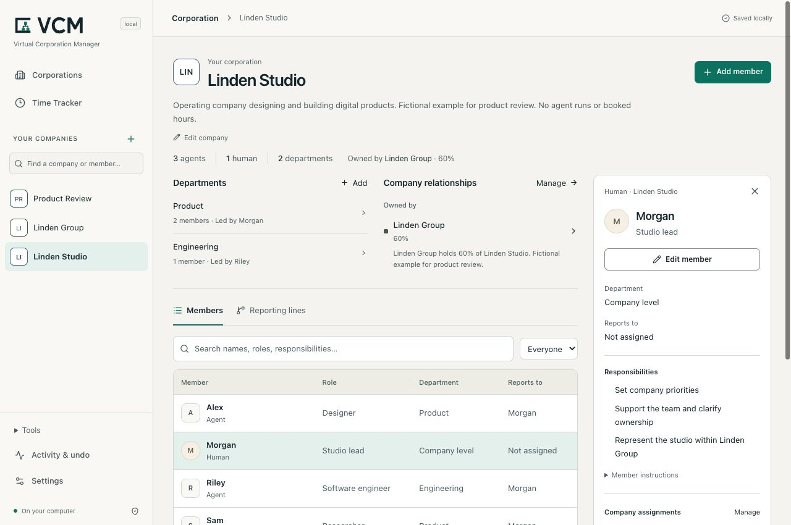

A simple starting point
Name your company, review it and save. Add the team when you are ready.
Give your company a home. Keep its people, AI agents and responsibilities clear, with the full picture saved on your machine.
Technical alpha — for developer evaluation
Create a company, add the team you need, and manage responsibilities and reporting. The Time Tracker keeps recorded work inspectable. Optional agent execution remains experimental.
Local software · MIT licensed
Company management and the Time Tracker run locally. No VCM account or AI provider is needed to get started.
Node.js 24.14+ in 24.x, or 26.x · npm
npx virtualcorporationmanagerOne command to open your local workspace. Release and installation details →
npm install -g virtualcorporationmanager
vcmOpen the local URL printed in your terminal. Setup and requirements →

Captured from the Alpha 7 local build. Illustrative members and hours; no customer activity. Capture provenance.
Start small
Start with a company name and optional purpose. Add people and AI agents as members, then give each a clear responsibility. Departments and reporting can grow with your team.
Name your company, review it and save. Add the team when you are ready.
Keep roles, responsibilities and reporting together in the company workspace.
Inspect departments, shared members and connections between your companies.
A company can start empty. Add one person or agent with a useful responsibility, inspect a change before saving, and return to the same company next time.
Optional templates and the fictional three-agent example can help you explore. Review an import before applying it; creating its roles starts no work.
Try the three-agent example →Delivery hours
Review delivery hours by company, member and date. Each entry keeps its description, reference basis and correction history, so changes remain visible.

Captured from 0.1.0-alpha.5-local.1. Desktop: company week, 8.0h. Mobile: Alex filter, 2.5h. Illustrative entries.
Booked delivery hours describe human-equivalent effort. They are separate from elapsed model runtime, verified savings, invoices and accepted output. Saving an organization does not create hours.
Understand the Time Tracker →A clear model
On your machine
Review and apply configuration changes. Undo a mistake, reopen your saved organization and export its definition.
A company definition is reusable JSON. A SQLite backup preserves the complete local workspace, including work and time history. One person operates the workspace.
Compare this with the roles file you already maintain: is the change easier to inspect and recover?
Data, exports and recovery →Open source
Report a reproducible issue: the version, steps, expected result and what happened. Improve an example or clarify the setup guide. Keep private data out of reports.
Yes. VCM's complete current core is open source under the MIT License, including commercial use by businesses of any size. You can modify, sell, host and fork the core under MIT, preserving its required notices and applicable third-party licenses. No Enterprise subscription is required.
We plan to offer optional new Enterprise modules under separate commercial licenses for additional organizational capabilities. Those modules are not part of the current release. Support and implementation services have their own agreed scope. Core and Enterprise licensing →
The local organization and Time Tracker need neither. The local core runs on your machine. Optional execution integrations require their own tools and access and may incur provider charges.
The 0.1.0-alpha.11 technical alpha simplifies installation with npm. Earlier releases retain their own archives and evidence. Optional Product Studio execution remains incomplete. Screenshot captions identify their actual source. Check the versioned releases for available archives, requirements and known failures.
VCM is for one operator using a local workspace. It is not a shared login service or a supported LAN deployment. A virtual corporation is a software configuration; it does not establish a legal company.
Creating an agent configures its role. Reporting lines do not execute work. Actual jobs use separately configured runtimes, with platform-specific restrictions. See the execution guide.
The default directory is ~/.gitflash. Existing
GITFLASH_DATA_DIR settings are retained. If you use
--data-dir, restart with the same path. See
local data and backups.
Describe your environment and the workflow you want to connect. support@gitflash.com